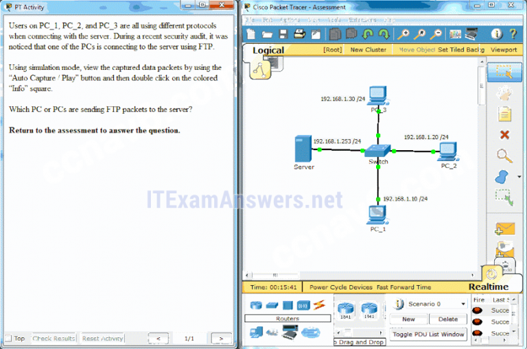
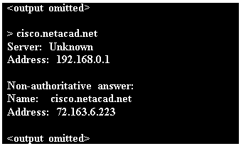
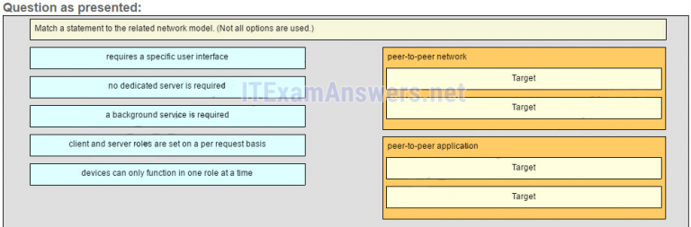
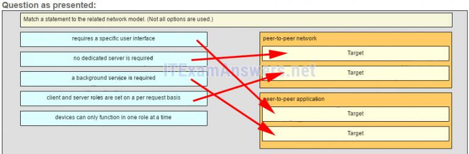
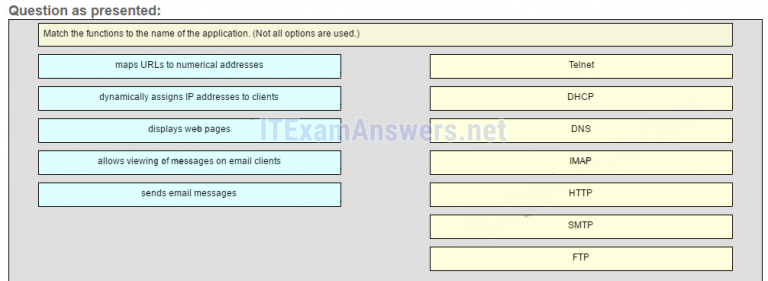
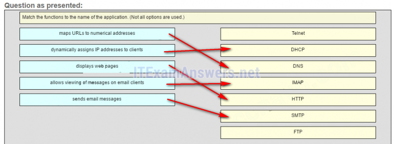
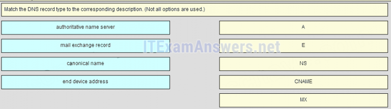
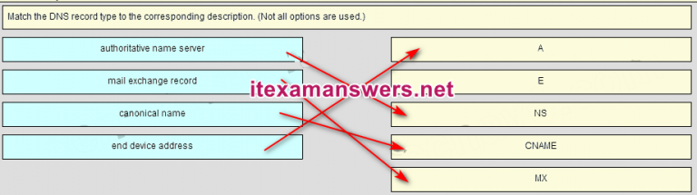
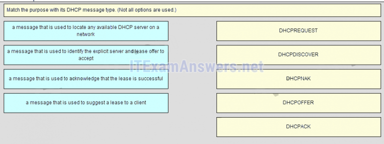
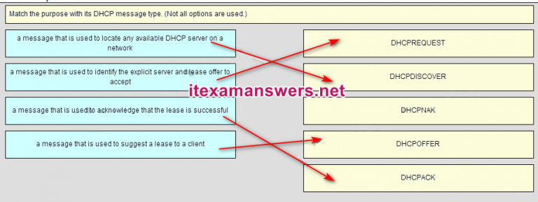

1.¿Qué dos definiciones describen con precisión el protocolo de capa de aplicación asociado? (Escoge dos.)
- HTTP: permite que los dispositivos en una red obtengan direcciones IP
- SMTP: transfiere páginas web de servidores web a clientes
- Telnet: proporciona acceso remoto a servidores y dispositivos de red *
- DNS: resuelve los nombres de Internet a direcciones IP *
- @javi__super
Explique:
El protocolo del Servicio de nombres de dominio (DNS) resuelve los nombres de Internet en direcciones IP. El Protocolo de transferencia de hipertexto (HTTP) transfiere los archivos que forman las páginas web de la World Wide Web. El Protocolo simple de transferencia de correo (SMTP) transfiere los mensajes de correo electrónico y los archivos adjuntos. Telnet, un protocolo de emulación de terminal, proporciona acceso remoto a servidores y dispositivos de red. El Protocolo de transferencia de archivos (FTP) transfiere archivos entre sistemas.
2.La capa de aplicación del modelo TCP / IP realiza las funciones de qué tres capas del modelo OSI? (Elige tres.)
- sesión *
- físico
- solicitud *
- presentación *
- @javi__super
Explique:
La capa de acceso a la red del modelo TCP / IP realiza las mismas funciones que las capas físicas y de enlace de datos del modelo OSI. La capa de red se equipara a la capa de red del modelo OSI. Las capas de transporte son las mismas en ambos modelos. La capa de aplicación del modelo TCP / IP representa las capas de sesión, presentación y aplicación del modelo OSI.
3.¿Qué capa en el modelo TCP / IP se usa para formatear, comprimir y cifrar datos?
- solicitud *
- internetwork
- sesión
- acceso a la red
- @javi__super
Explique:
La capa de aplicación del modelo TCP / IP realiza las funciones de tres capas del modelo OSI: aplicación, presentación y sesión. La capa de aplicación del modelo TCP / IP es la capa que proporciona la interfaz entre las aplicaciones, es responsable de formatear, comprimir y cifrar los datos, y se utiliza para crear y mantener diálogos entre las aplicaciones de origen y destino.
4.¿Cuáles son dos características de la capa de aplicación del modelo TCP / IP? (Escoge dos.)
- la creación y el mantenimiento del diálogo entre las aplicaciones de origen y destino *
- responsabilidad de direccionamiento lógico
- responsabilidad de direccionamiento físico
- más cercano al usuario final *
- @javi__super
Explique:
la capa de aplicación del modelo TCP / IP es la capa más cercana al usuario final, que proporciona la interfaz entre las aplicaciones. Es responsable de formatear, comprimir y cifrar los datos, y se utiliza para crear y mantener un diálogo entre las aplicaciones de origen y destino.
5.Una empresa de fabricación se suscribe a ciertos servicios alojados de su ISP. Los servicios que se requieren incluyen hospedado en todo el mundo, transferencia de archivos y correo electrónico. ¿Qué protocolos representan estas tres aplicaciones clave? (Elige tres.)
- FTP *
- HTTP *
- SMTP *
- DHCP
- @javi__super
Explique:
el ISP utiliza el protocolo HTTP junto con las páginas web de alojamiento, el protocolo FTP con transferencias de archivos y SMTP con el correo electrónico. DNS se utiliza para traducir nombres de dominio a direcciones IP. SNMP se utiliza para el tráfico de gestión de red. DHCP es comúnmente usado para administrar el direccionamiento IP.
6.¿Cuál es un ejemplo de comunicación de red que usa el modelo cliente-servidor?
- Una estación de trabajo inicia una solicitud de DNS cuando el usuario escribe www.cisco.com en la barra de direcciones de un navegador web. *
- Una estación de trabajo inicia un ARP para encontrar la dirección MAC de un host receptor.
- Un usuario utiliza eMule para descargar un archivo que comparte un amigo después de que se determina la ubicación del archivo.
- Un usuario imprime un documento utilizando una impresora que está conectada a una estación de trabajo de un compañero de trabajo.
- @javi__super
Explique:
cuando un usuario escribe un nombre de dominio de un sitio web en la barra de direcciones de un navegador web, una estación de trabajo debe enviar una solicitud de DNS al servidor DNS para el proceso de resolución de nombres. Esta solicitud es una aplicación modelo cliente / servidor. La aplicación eMule es P2P. Compartir una impresora en una estación de trabajo es una red de igual a igual. Usar ARP es solo un mensaje de difusión enviado por un host.
7.Dos estudiantes están trabajando en un proyecto de diseño de red. Un estudiante está haciendo el dibujo, mientras que el otro está escribiendo la propuesta. El dibujo está terminado y el estudiante desea compartir la carpeta que contiene el dibujo para que el otro estudiante pueda acceder al archivo y copiarlo en una unidad USB. ¿Qué modelo de red se está utilizando?
- de igual a igual *
- basado en el cliente
- maestro-esclavo
- punto a punto
- @javi__super
Explicación:
en un modelo de red peer-to-peer (P2P), los datos se intercambian entre dos dispositivos de red sin el uso de un servidor dedicado. Al aire libre
8.¿Qué tienen en común el cliente / servidor y los modelos de red de igual a igual?
- Ambos modelos admiten dispositivos en roles de servidor y cliente. *
- Ambos modelos tienen servidores dedicados.
- Ambos modelos requieren el uso de protocolos basados en TCP / IP.
- Ambos modelos se utilizan solo en el entorno de red cableada.
- @javi__super
Explique:
tanto en el cliente / servidor como en los modelos de red de igual a igual, existen clientes y servidores. En las redes de igual a igual, no existe un servidor dedicado, pero un dispositivo puede asumir la función de servidor para proporcionar información a un dispositivo que cumple la función de cliente.
9.¿Cuál es una ventaja para las pequeñas organizaciones de adoptar IMAP en lugar de POP?
- Los mensajes se guardan en los servidores de correo hasta que se eliminan manualmente del cliente de correo electrónico. *
- Cuando el usuario se conecta a un servidor POP, las copias de los mensajes se guardan en el servidor de correo durante un breve período de tiempo, pero IMAP los conserva durante mucho tiempo.
- IMAP envía y recupera correos electrónicos, pero POP solo recupera correos electrónicos.
- POP solo permite al cliente almacenar mensajes de forma centralizada, mientras que IMAP permite el almacenamiento distribuido.
- @javi__super
Explique:
IMAP y POP son protocolos que se utilizan para recuperar mensajes de correo electrónico. La ventaja de usar IMAP en lugar de POP es que cuando el usuario se conecta a un servidor con capacidad IMAP, las copias de los mensajes se descargan en la aplicación cliente. Luego, IMAP almacena los mensajes de correo electrónico en el servidor hasta que el usuario los borra manualmente.
10.¿Qué protocolo de capa de aplicación utiliza tipos de mensajes como GET, PUT y POST?
- HTTP *
- SMTP
- POP3
- DNS
- @javi__super
Explicar:
el comando GET es una solicitud del cliente para los datos de un servidor web. Un comando PUT carga recursos y contenido, como imágenes, en un servidor web. Un comando POST carga archivos de datos a un servidor web.
11.Al recuperar mensajes de correo electrónico, ¿qué protocolo permite un almacenamiento centralizado y una copia de seguridad de los correos electrónicos que sería conveniente para una pequeña y mediana empresa?
- IMAP *
- POPULAR
- SMTP
- HTTPS
- @javi__super
Explique:
se prefiere IMAP para las pequeñas y medianas empresas, ya que IMAP permite el almacenamiento centralizado y la copia de seguridad de los correos electrónicos, con copias de los correos electrónicos que se reenvían a los clientes. POP entrega los correos electrónicos a los clientes y los elimina en el servidor de correo electrónico. SMTP se utiliza para enviar correos electrónicos y no para recibirlos. HTTPS no se utiliza para la navegación web segura.
12.¿Cuál es la función de la utilidad Nslookup?
- para consultar manualmente los servidores de nombres para resolver un nombre de host dado *
- para ver la configuración de red en un host
- para forzar manualmente a un cliente a enviar una solicitud DHCP
- para mostrar todas las entradas de DNS en caché en un host
- @javi__super
Explique:
Nslookup es una utilidad de línea de comandos que se utiliza para enviar una consulta a los servidores DNS para resolver un nombre de host específico a una dirección IP.
13.¿Qué tipo de mensaje utiliza un cliente HTTP para solicitar datos de un servidor web?
- OBTENER *
- PONER
- ACK
- ENVIAR
- @javi__super
Explique:
los clientes HTTP envían mensajes GET para solicitar datos de los servidores web.
14.¿Qué protocolo utiliza un cliente para comunicarse de forma segura con un servidor web?
- HTTPS *
- SMB
- SMTP
- IMAP
- @javi__super
Explique:
HTTPS es una forma segura de HTTP que se utiliza para acceder al contenido web alojado en un servidor web.
15.¿Qué tres afirmaciones describen un mensaje de Descubrimiento de DHCP? (Elige tres.)
- La dirección IP de destino es 255.255.255.255. *
- La dirección MAC de origen es de 48 unidades (FF-FF-FF-FF-FF-FF).
- El mensaje proviene de un cliente que busca una dirección IP. *
- Todos los hosts reciben el mensaje, pero solo un servidor DHCP responde. *
- @javi__super
Explicar:
cuando un host configurado para usar DHCP se enciende en una red, envía un mensaje DHCPDISCOVER. FF-FF-FF-FF-FF-FF es la dirección de transmisión L2. Un servidor DHCP responde con un mensaje DHCPOFFER de unidifusión al host.
16.¿Qué parte de la URL, http://www.cisco.com/index.html, representa el dominio DNS de nivel superior?
- .com *
- www
- http
- índice
- @javi__super
17.¿Qué dos tareas puede realizar un servidor DNS local? (Escoge dos.)
- asignación de direcciones de nombre a IP para hosts internos *
- proporcionar direcciones IP a hosts locales
- permitiendo la transferencia de datos entre dos dispositivos de red
- reenvío de solicitudes de resolución de nombres entre servidores *
- @javi__super
Explique:
dos funciones importantes de DNS son (1) proporcionar direcciones IP para nombres de dominio, como www.cisco.com, y (2) enviar solicitudes que no se pueden resolver a otros servidores para proporcionar la traducción de la dirección IP a un nombre de dominio. DHCP proporciona información de direccionamiento IP a dispositivos locales. Un protocolo de transferencia de archivos como FTP, SFTP o TFTP proporciona servicios para compartir archivos. IMAP o POP se pueden usar para recuperar un mensaje de correo electrónico de un servidor.
18.¿Qué frase describe un demonio FTP?
- un programa que se ejecuta en un servidor FTP *
- un programa de diagnostico FTP
- un programa que se ejecuta en un cliente FTP
- una aplicación que se utiliza para solicitar datos de un servidor FTP
- @javi__super
Explique:
un servidor FTP ejecuta un demonio FTP, que es un programa que proporciona servicios FTP. Los usuarios finales que solicitan servicios deben ejecutar un programa de cliente FTP.
19.¿Qué afirmación es cierta acerca de FTP?
- El cliente puede descargar datos o cargar datos en el servidor. *
- El cliente puede elegir si FTP va a establecer una o dos conexiones con el servidor.
- FTP es una aplicación peer-to-peer.
- FTP no proporciona confiabilidad durante la transmisión de datos.
- @javi__super
Explique:
FTP es un protocolo cliente / servidor. FTP requiere dos conexiones entre el cliente y el servidor y utiliza TCP para proporcionar conexiones confiables. Con FTP, la transferencia de datos puede ocurrir en cualquier dirección. El cliente puede descargar (extraer) datos del servidor o cargar (enviar) datos al servidor.
20.¿Qué es verdad sobre el protocolo del Bloque de mensajes del servidor?
- Los clientes establecen una conexión a largo plazo con los servidores. *
- Los diferentes tipos de mensajes SMB tienen un formato diferente.
- Los mensajes SMB no pueden autenticar una sesión.
- SMB utiliza el protocolo FTP para la comunicación.
- @javi__super
Explicación:
el protocolo del Bloque de mensajes del servidor es un protocolo para compartir archivos, impresoras y directorios. Los clientes establecen una conexión a largo plazo con los servidores y cuando la conexión está activa, se puede acceder a los recursos. Cada mensaje SMB tiene el mismo formato. El uso de SMB difiere de FTP principalmente en la duración de las sesiones. Los mensajes SMB pueden autenticar sesiones.
21.¿Qué protocolo de capa de aplicación se usa para proporcionar servicios de intercambio de archivos e impresión a las aplicaciones de Microsoft?
- SMB *
- HTTP
- SMTP
- DHCP
- @javi__super
Explique:
SMB se usa en la red de Microsoft para compartir archivos y servicios de impresión. El sistema operativo Linux proporciona un método para compartir recursos con las redes de Microsoft mediante el uso de una versión de SMB llamada SAMBA.
22.Rellena el espacio en blanco.
- ¿Cuál es el acrónimo del protocolo que se usa cuando se comunica de forma segura con un servidor web?HTTPS
- @javi__super
Explicación:
el
Protocolo de transferencia de hipertexto seguro (HTTPS) es el protocolo que se utiliza para acceder o publicar información del servidor web a través de un canal de comunicación seguro.
23.Rellena el espacio en blanco.
- El tipo de mensaje HTTP utilizado por el cliente para solicitar datos del servidor web esGET.mensaje.
- @javi__super
Explique:
GET es uno de los tipos de mensajes utilizados por HTTP. Un cliente (navegador web) envía el mensaje GET al servidor web para solicitar páginas HTML.
24.Abra la actividad PT. Realice las tareas en las instrucciones de la actividad y luego responda la pregunta. ¿Qué PC o PC están enviando paquetes FTP al servidor?

- PC_2 *
- PC_3
- PC_1
- PC_1 y PC_3
- @javi__super
Explicar:
después de ver los detalles de los paquetes que se transfieren entre cada PC y el servidor, verá que la PC que utiliza un número de puerto de destino de 20 o 21 es la PC que usa el servicio FTP. PC_2 tiene un número de puerto de salida de 21 para crear una sesión de control de FTP con el servidor en 192.168.1.253.
25.Rellena el espacio en blanco. Consulte la presentación. ¿Qué comando se usó para resolver un nombre de host dado al consultar los servidores de nombres?

- nslookup *
- @javi__super
Explicación:
un usuario puede consultar manualmente los servidores de nombres para resolver un nombre de host dado con el comando nslookup. Nslookup es un comando y una utilidad.
26.Haga coincidir una declaración con el modelo de red relacionado.
- Pregunta

- Respuesta

- @javi__super
Explique:
las
redes de igual a igual no requieren el uso de un servidor dedicado, y los dispositivos pueden asumir roles de cliente y servidor simultáneamente en cada solicitud. Debido a que no requieren cuentas o permisos formalizados, se utilizan mejor en situaciones limitadas. Las aplicaciones de igual a igual requieren una interfaz de usuario y un servicio en segundo plano para poder ejecutarse, y se pueden utilizar en situaciones más diversas.
27.Relaciona las funciones con el nombre de la aplicación.
- Pregunta

- Respuesta

- @javi__super
28.¿Qué tres capas del modelo OSI proporcionan servicios de red similares a los proporcionados por la capa de aplicación del modelo TCP / IP? (Elige tres.)
- capa de sesión *
- capa de aplicación *
- Capa de enlace de datos
- Capa de presentación *
- @javi__super
29.¿Qué dos tareas son funciones de la capa de presentación? (Escoge dos.)
- compresión *
- direccionamiento
- cifrado *
- control de sesión
- @javi__super
30.Seleccione tres protocolos que operan en la capa de aplicación del modelo OSI. (Elige tres.)
- DHCP *
- POP3 *
- FTP *
- DSL
- @javi__super
31.Una empresa de fabricación se suscribe a ciertos servicios alojados de su ISP. Los servicios requeridos incluyen hospedaje en todo el mundo, transferencia de archivos y correo electrónico. ¿Qué protocolos representan estas tres aplicaciones clave? (Elige tres.)
- FTP *
- HTTP *
- DHCP
- SMTP *
- @javi__super
32.¿Cuáles son las dos características de las redes peer-to-peer? (Escoge dos.)
- recursos descentralizados *
- escalable
- flujo de datos unidireccional
- compartir recursos sin un servidor dedicado *
- @javi__super
33.¿Qué dos acciones toma SMTP si el servidor de correo electrónico de destino está ocupado cuando se envían mensajes de correo electrónico? (Escoge dos.)
- SMTP intenta enviar los mensajes más tarde. *
- SMTP envía un mensaje de error al remitente y cierra la conexión.
- SMTP comprueba periódicamente la cola de los mensajes e intenta enviarlos de nuevo. *
- SMTP envía los mensajes a otro servidor de correo para su entrega.
- @javi__super
34.Una PC cliente habilitada para DHCP acaba de arrancar. ¿En qué dos pasos utilizará el PC cliente los mensajes de difusión al comunicarse con un servidor DHCP? (Escoge dos.)
- DHCPDISCOVER *
- DHCPOFFER
- DHCPACK
- DHCPREQUEST *
- @javi__super
35.Un usuario accedió al sitio del juego www.nogamename.com la semana pasada. La noche antes de que el usuario acceda de nuevo al sitio del juego, el administrador del sitio cambia la dirección IP del sitio. ¿Cuál será la consecuencia de esa acción para el usuario?
- El usuario accederá al sitio sin problemas. *
- El usuario no podrá acceder al sitio.
- El usuario tendrá que modificar la dirección del servidor DNS en la PC local para poder acceder al sitio.
- El usuario deberá emitir un ping a esta nueva dirección IP para asegurarse de que el nombre de dominio permanezca igual.
- @javi__super
36.¿Qué servidor DNS en la jerarquía de DNS se consideraría autoritario para los registros de nombres de dominio de una compañía llamada netacad?
- netacad.com *
- mx.netacad.com
- www.netacad.com
- .com
- @javi__super
37.¿Cuándo sería más eficiente usar SMB para transferir archivos en lugar de FTP?
- al descargar grandes cantidades de archivos desde el mismo servidor *
- al descargar archivos grandes con una variedad de formatos de diferentes servidores
- cuando se requiere una aplicación peer-to-peer
- cuando los dispositivos host en la red usan el sistema operativo Windows
- @javi__super
38.Rellena el espacio en blanco.
- ¿Cuál es el acrónimo del protocolo que se usa cuando se comunica de forma segura con un servidor web? HTTPS *
- @javi__super
El Protocolo de transferencia de hipertexto seguro (HTTPS) es el protocolo que se utiliza para acceder o publicar información del servidor web mediante un canal de comunicación seguro.
39.Haga coincidir el tipo de registro DNS con la descripción correspondiente. (No se utilizan todas las opciones).
- Pregunta

- Respuesta

- @javi__super
40.Haga coincidir el propósito con su tipo de mensaje DHCP. (No se utilizan todas las opciones).
- Pregunta

- Respuesta

- @javi__super